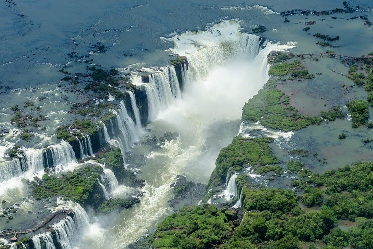

PARQUE NACIONAL IGUAZÚ
MARAVILLA DEL MUNDO
PATRIMONIO NATURAL DE LA HUMANIDAD
Las majestuosas Cataratas del Iguazú se encuentran en el interior del Parque Nacional Iguazú, un área de preservación de la naturaleza que abarca 67.720 hectáreas en el extremo norte de la Provincia de Misiones, en la República Argentina. Se trata de un sistema de 275 saltos de agua en plena Selva Paranaense, ubicados a 17 kilómetros de la desembocadura del Río Iguazú en las aguas del Río Paraná, punto en el cual se encuentran las fronteras de Argentina, Brasil y Paraguay, y en el que se erigen las ciudades de Puerto Iguazú, en el lado argentino, Foz do Iguaçu en el lado brasileño y el conglomerado urbano Ciudad del Este/Presidente Franco, del lado paraguayo. Datos Curiosos: Las Cataratas tienen un ancho de 2.7 kilómetros (o 1,7 millas). Su altura varía entre los 60 metros (200 pies) y 82 metros (o 269 pies) y su caudal de agua promedio es de 1.800 m³/s. Una gran parte del agua de las Cataratas cae en la Garganta del Diablo- un largo abismo que es de 82 metros de altura, 150 metros de ancho y 700 metros de largo. Este abismo es en forma de “U.” Dos tercios de las Cataratas del Iguazú están en el lado de Argentina. Las Cataratas del Iguazú se formaron como resultado de una erupción volcánica. Las Cataratas del Iguazú pueden ser vistas en muchas películas, incluyendo: “La Misión”, “Indiana Jones and the Kingdom of the Crystal Skull”, “Mr. Magoo”, “Miami Vice” y muchas más. Durante 2017 vinieron al Parque Nacional Iguazú 1.500.000 visitantes.
El Parque abre todos los días del año a partir de las 8:00hs. Se puede ingresar hasta las 16:30 y permanecer dentro del Parque hasta las 18:00hs.
Es necesario presentar el DNI o Pasaporte
El domicilio que conste en la documentación será el determinante para establecer la categoría de visitante.